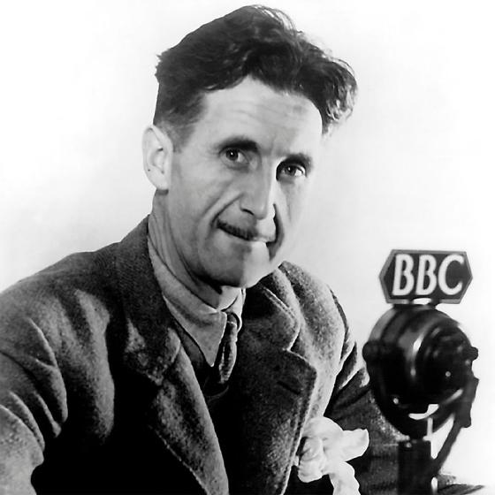

Sevdiğim sanatçılar
Cem Karaca
1945 doğumlu Anadolu Rock sanatçısı.
Barış Manço
1943 doğumlu Anadolu pop ve rock üstadı, uzun saçlı ve alışılmadık 20. yüzyıl ozanı.

Erkin Koray
1941 doğumlu Underground ve Anadolu Rock türlerinin efsane ismi Erkin Baba.
Sevdiğim şairler

Ömer Hayyam
11. yüzyılda yaşamış Fars asıllı filozof,matematikçi ve astronom.
Nazım Hikmet
1902 doğumlu aşk şiirleriyle tanınan hayatı sürgünde ve zindanlarda geçmiş aykırı şair.
Ahmed Arif
1927 Diyarbakır doğumlu fikirlerinden dolayı hapis yatmış şair.
Favori kitaplarım
Yeraltından Notlar
Yeraltından Notlar, Dostoyevski'nin, birçok Batılı düşünürü varoluşçu anlamda etkilemiş bir klasik olarak kabul edilen kısa romanıdır.
Semerkant
Yapıt, Ömer Hayyam'ın Rubaiyat adlı elyazması eserinin 1072 yılında Semerkant'ta başlayan ve 1912'de Titanik'te biten hikâyesini ele alıyor.

Hayvan Çiftliği
Hayvan Çiftliği, George Orwell'in mecazi bir dille yazılmış, fabl tarzındaki siyasi hiciv romanı.
Favori yazarlarım

George Orwell
1903 doğumlu 20. yüzyıl İngiliz edebiyatının önde gelen kalemleri arasındadır.
Aziz Nesin
Mehmet Nusret Nesin, bilinen adıyla Aziz Nesin, kısa öykü, tiyatro ve şiir dallarında pek çok yapıtı bulunan Türk mizah yazarı.
Jean-Paul Sartre
Jean-Paul Sartre, ünlü Fransız yazar ve düşünür. Felsefi içerikli romanlarının yanı sıra her yönüyle kendine özgü Varoluşçu felsefeyi geliştirmiştir.
Random Images